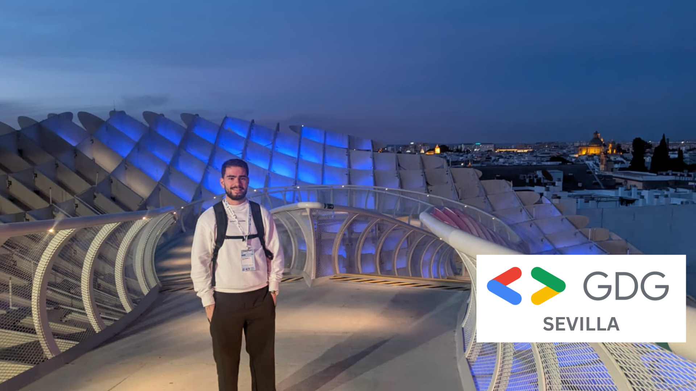

Técnico especialista de laboratorio
Participación en proyectos de generación de conocimiento con foco en integración técnica, soporte a sistemas y trabajo aplicado a entornos reales.
Portfolio / Sevilla + Lanzarote
Ingeniero informático y técnico especialista de laboratorio centrado en software, Linux, energía, monitorización, IoT e innovación aplicada.
01 / Sobre mí
Soy Echedey Aguilar Hernández, originario de Lanzarote y graduado en Ingeniería Informática en la Universidad de Sevilla, dentro del itinerario de Ingeniería de Computadores.
Actualmente trabajo como técnico especialista de laboratorio en proyectos de generación de conocimiento, con atención especial al proyecto REEGREENH2. Mi interés está en la informática cuando se mezcla con energía, dispositivos, operación, robótica y sistemas reales.
También he participado en un proyecto internacional en Cuba, dentro de OPTES, centrado en IoT e inteligencia artificial para detección de sonidos de aves. Fuera de lo estrictamente profesional, me interesan la divulgación científica, viajar y la naturaleza.
02 / Proyectos
No presento un portfolio de piezas visuales, sino un recorrido por contextos donde software, infraestructura y entorno físico se cruzan.
03 / Experiencia laboral
Mi recorrido combina operación, aprendizaje rápido y trabajo en entornos donde la parte digital y la parte física se necesitan mutuamente.
Participación en proyectos de generación de conocimiento con foco en integración técnica, soporte a sistemas y trabajo aplicado a entornos reales.
Colaboración en un contexto donde la energía, la observabilidad y la modernización de infraestructuras forman parte del mismo problema técnico.
Proyecto centrado en dispositivos conectados y detección de sonidos de aves mediante IA, con trabajo de captura, sensorización y contexto multidisciplinar.
04 / Habilidades técnicas
Software
Sistemas y observabilidad
Intereses aplicados
05 / Educación
La formación formal y la exploración práctica conviven: universidad, laboratorio, comunidad y autoaprendizaje técnico.
Formación centrada en base computacional, arquitectura, software y sistemas, con continuidad natural hacia proyectos donde hay que entender tanto el código como el contexto técnico.

Parte del aprendizaje también ha pasado por fabricar, probar y enfrentarse a objetos y sistemas reales.
06 / Certificaciones
07 / Conferencias, workshops y premios


08 / Contacto
Si el proyecto necesita criterio técnico, curiosidad y capacidad de moverse entre laboratorio, código y operación, podemos hablar.